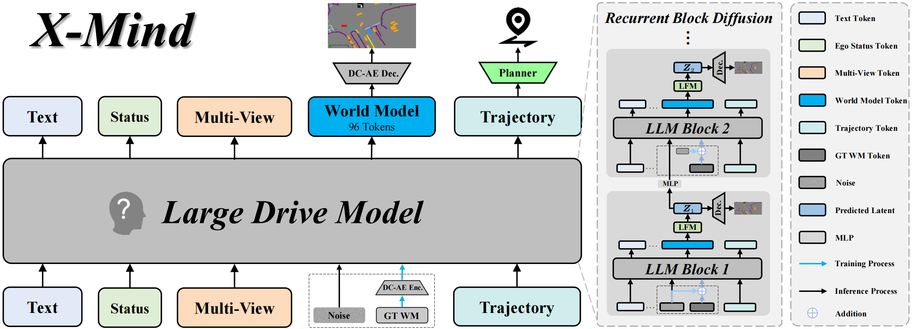
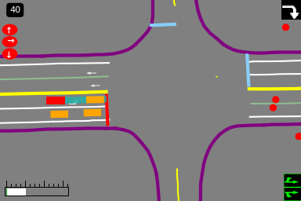
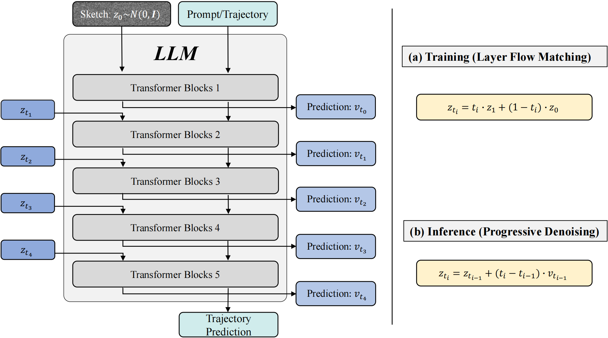
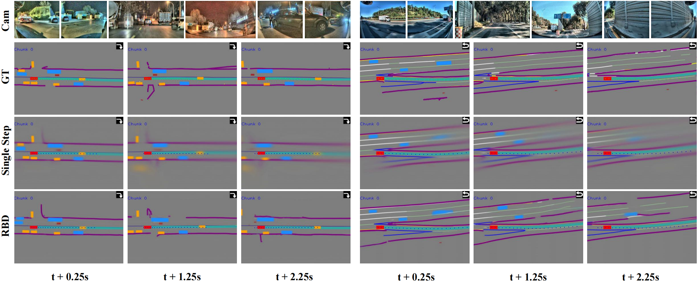

X-Mind: Efficient Visual Chain-of-Thought via Predictive World Model for End-to-End Driving
Why Visual Chain-of-Thought for Driving?
Predicting future states is the cornerstone of reasoning for autonomous physical agents. Vision-Language-Action (VLA) models have driven remarkable progress in end-to-end driving, yet they predominantly rely on direct perception-to-action mapping and lack explicit predictive capability. Integrating Predictive World Models (PWMs) is a consensus path to close this gap, but existing approaches either cascade PWMs — incurring prohibitive on-vehicle latency — or append them as shallow terminal tasks, failing to instill forward-looking reasoning into the deep backbone of large language models.
X-Mind internalizes PWMs as Visual Chain-of-Thought (Visual CoT). By enforcing a world rollout prior to action, the model imagines future evolution first, yielding a policy robustly grounded in environmental dynamics and aware of the future consequences its actions will unfold. Efficiency is tackled on two fronts: a compact abstract sketch (BEV layout fused with driving priors) compressed to 96 tokens via a Deep Compression Autoencoder (DC-AE), and a Recurrent Block Diffusion (RBD) scheme that folds iterative denoising into a single forward pass of the large drive model.

Contributions
- Predictive reasoning via Visual CoT. We frame physical reasoning as future world prediction, integrating PWMs as an explicit Visual CoT that provides dense, physics-grounded constraints for VLA models.
- Efficient visual thinking representation. Inspired by biological mental imagery, an abstract sketch fuses BEV layouts with navigation intents and traffic rules. DC-AE compresses a 12-frame future rollout to 96 tokens, resolving the long-context bottleneck of instantiating Visual CoT via PWMs.
- Recurrent block diffusion. An internalized generative mechanism unfolds denoising steps across LLM layers, achieving extremely fast single-forward-pass future generation suitable for real-time inverse dynamics planning.
- Large-scale validation. Validated on hundreds of millions of real-world driving frames, the framework exhibits strong scalability on complex long-tail interactive scenarios with stable system-level performance.
Industry-Scale Multi-Camera Driving
We validate X-Mind on a large-scale internal autonomous driving dataset collected from diverse real-world scenarios — approximately 280,000 hours of continuous driving records, segmented into 34 million video clips. Following the hardware configuration established in X-World, sensory input comprises multi-view images from seven onboard cameras (front fisheye, front narrow, left front, right front, left rear, right rear, and rear), providing full 360° coverage.
We adopt the same data processing protocol as X-Foresight. Visual inputs are tokenized into a corpus of 13.8 T tokens for large drive model training, with the dataset distribution spanning approximately 86.8% urban and 13.2% highway driving conditions. All experiments in this report use a subset comprising one eighth of the total dataset.
PWM as Visual CoT Internalized in the Large Drive Model
X-Mind shifts from reactive perception-to-action mapping to predictive cognitive reasoning. By internalizing a PWM within the large drive model, we instantiate Visual CoT — an explicit spatiotemporal rollout prior to action generation that provides dense, physics-grounded constraints for deep network features.
Two key designs align with the generative data flow. First, heterogeneous inputs are encoded into an efficient visual thinking representation: rather than predicting dense future images, the model forecasts a compact abstract sketch that aggregates road topologies, dynamic agents, traffic light states, navigation intents, and velocity compliance profiles. DC-AE compresses a 12-frame rollout to 96 tokens. Second, Recurrent Block Diffusion (RBD) unrolls progressive denoising steps across hierarchical LLM layers, predicting the anticipated physical future in a single forward pass before an inverse dynamics planner derives the ego trajectory.
Visual CoT (World Model)
Layer Flow Matching distributes denoising across internal LLM depths. Sketch tokens are re-injected at designated layers with progressively decreasing noise, allowing perception and trajectory tokens to attend to a clarifying physical future in latent space.
Inverse Dynamics Planner
Conditioned on the internalized spatial and temporal rollout, a dedicated planner head derives the optimal ego trajectory. Kinematic planning loss supervises longitudinal acceleration and yaw rate directly, ensuring physically executable, non-holonomically feasible trajectories.
Abstract Sketch as Mental Canvas
Select a view below: the abstract sketch mental canvas, or the structured ground-truth labels used to supervise world model training.

Recurrent Block Diffusion

End-to-End Joint Optimization
The framework is jointly optimized with a weighted sum of world model rollout loss
(LWM) and kinematic planning loss (Lplan):
Ltotal = λWMLWM + λplanLplan.
World model supervision combines layer-wise latent flow matching with sparse image-space
reconstruction (MSE + LPIPS on decoded sketches). This unified objective provides dense,
physics-grounded constraints for the LLM backbone and avoids shortcut learning on sparse
ground-truth trajectories alone.
World Model vs. VLA Baseline
The clips below compare planning behavior across five driving scenarios. Each example shows Ground Truth, w/o World Model (VLA), and w World Model (X-Mind) side by side within the video.
- Ground Truth
- w/o World Model
- w/ World Model
Future Sketch Rollout (RBD vs. Single-Step)
Compared to a single-step denoising baseline that frequently produces blurred or fading semantic layouts, RBD generates persistently sharp and temporally coherent abstract sketches. The model can infer continuous motion of dynamic agents even when they are missing or heavily occluded in ground truth annotations.

Quantitative Evaluation and Ablations
Impact of Scene Representations
We compare raw image features, 3D Gaussian Splatting (3DGS), and our abstract sketch under identical backbones. The sketch achieves the best Average Displacement Error (ADE) while requiring only 96 extra tokens — an extreme reduction versus dense image (3584 tokens) or 3DGS (3072 tokens) baselines.
| Method | Extra Tokens | ADE Lat. ↓ / ADE Lon. @6s ↓ | Inference ↓ |
|---|---|---|---|
| Base | 0 | 0.2399 / 1.2979 | 1.0 |
| Base + Image | 3584 | 0.2003 / 1.2456 | 22.0 |
| Base + 3DGS | 3072 | 0.1964 / 1.2247 | 19.0 |
| Base + Sketch (Ours) | 96 | 0.1765 / 1.1849 | 1.1 |
Comparison of Diffusion Architectures
Single-step denoising at the final stage improves planning over the standard VLA baseline but yields a high FID of 67.30, indicating modality collapse. RBD reduces FID to 9.59 with only 0.1x additional inference latency and achieves the best lateral and longitudinal ADE.
| Method | Inference ↓ | FID ↓ | ADE Lat. ↓ / ADE Lon. ↓ |
|---|---|---|---|
| Base | 1.0 | — | 0.2399 / 1.2979 |
| Base + Sketch (Single Step) | 1.1 | 67.30 | 0.1783 / 1.1938 |
| Base + Sketch (RBD) | 1.1 | 9.59 | 0.1765 / 1.1849 |
Reconstruction vs. Future Generation
Current-frame sketch reconstruction achieves the best FID but the weakest trajectory performance. Predicting 12 future frames achieves the best ADE despite a moderately higher FID — confirming that the core advantage derives from predictive generative rollout, not visually faithful reconstruction of present observations.
| Method | Sketch Target | FID ↓ | ADE Lat. ↓ / ADE Lon. ↓ |
|---|---|---|---|
| Base + Sketch (RBD) | Current frame | 8.97 | 0.1866 / 1.2132 |
| Base + Sketch (RBD) | Future 1 frame | 9.05 | 0.1840 / 1.2124 |
| Base + Sketch (RBD) | Future 12 frames | 9.59 | 0.1765 / 1.1849 |
Paper, Citation, Contributors
The technical report is available as PDF. If X-Mind informs your research, please cite us:
@techreport{xmind2026,
title = {X-Mind: Efficient Visual Chain-of-Thought via Predictive World Model for End-to-End Driving},
author = {{PWM Team}},
year = {2026},
institution = {XPeng Inc.}
}
Future Work
Two primary directions remain. First, joint sampling of control actions and intermediate abstract sketch representations during inference — evaluating kinematic feasibility and environmental interactions simultaneously during internal denoising steps. Second, integrating self-supervised representation learning to forecast future states from unannotated sensory inputs, easing continuous scaling beyond structured GT annotations.
Contributors
- Advisors
- Yu Zhang, Hang Zhang, Xianming Liu
- Project Lead
- Qingyu Luo, Zhuangzhuang Ding
- Contributors
- Bohao Zhao*, Chengrui Wei*, Guangfeng Jiang*‡, Ruixin Liu*, Xuejie Lv*, Liu Liang, Sutao Deng, Xiuyang Fan, Pengkun Zheng, Jinyun Zhou, Rui Guo, Hanpeng Liu, Yutong Zheng, Yi Guo, Xinlong Zheng
- Technical Program Manager
- Tenglong (Victor) Gu
*Core contribution. The first five authors are listed in alphabetical order. ‡Research Intern at XPENG.